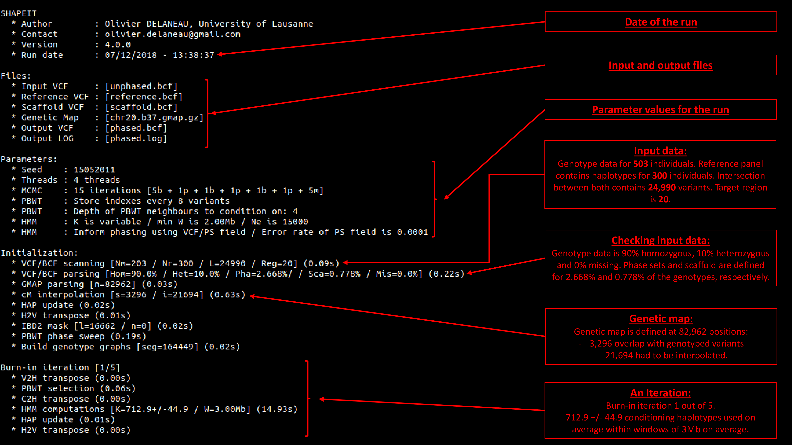

installation
Important notes before starting:
- Compile SHAPEIT4 on the same machine it will be run if possible. This significantly increases performance.
- Run preferentially SHAPEIT4 on CPUs supporting AVX2 instruction set as the code has been heavily optimized in that direction. AVX2 is usually available for CPUs from 2012+. Run
cat /proc/cpuinfoin order to check. - Compile SHAPEIT4 using g++ version >= 5 at the very least. I personally use version v7.4.0. Compiling it using g++ v4 does not work. Run
g++ --versionin order to check. I've never tried to compile it using Intel compiler.
Make sure that the two following libraries are installed on your system:
- HTSlib: A great C library for reading/writing high-throughput sequencing data.
- BOOST: A free peer-reviewed portable C++ source libraries. SHAPEIT4 uses two specific BOOST libraries: iostreams and program_options.
Make sure that the following standard library flags can be used by g++ on your system:
-lz,-lbz2and-llzmafor reading/writing compressed files.-lmfor basic math operations.-lpthreadfor multi-threading.
You can do so by checking the outcome of the following commands:
locate -b '\libz.so'locate -b '\libbz2.so'locate -b '\liblzma.so'locate -b '\libm.so'locate -b '\libpthread.so'Then, download the last stable version of the SHAPEIT4 code here: RELEASES
Navigate to the downloaded folder using cd shapeit4.
You'll find there the following folders and files:
bin: folder for the compiled binary.docs: source code of this website.maps: genetic maps for human taken from HapMap.obj: folder with all binary objects.src: folder with all SHAPIT4 source code.test: folder with small example datasets.README.md: front page of the GitHub.LICENSE: copy of the MIT license.makefileto compile the code.
Edit the makefile at lines 5-6 and 9-11 so that the following variables are correctly set up (look at the paths already there for an example):
HTSLIB_INC(line 5): path to the HTSlib header files,HTSLIB_LIB(line 6): path to the static HTSlib library (filelibhts.a),BOOST_INC(line 9): path to the BOOST header files (often/usr/include),BOOST_LIB_IO(line 10): path to the static BOOST iostreams library (filelibboost_iostreams.a),BOOST_LIB_PO(line 11): path to the static BOOST program_options library (filelibboost_iostreams.a),
The static libraries (*.a files) can be located with this command:
locate libboost_program_options.a libboost_iostreams.a libhts.a
Once all paths correctly set up, proceed with the SHAPEIT4 compilation using make.
documentation
1. Simple run
To do so with default parameters, use the following command line:
shapeit4 --input unphased.vcf.gz --map chr20.b37.gmap.gz --region 20 --output phased.vcf.gz
All four options are mandatory and their descriptions are:
--inputspecifies the input file containing unphased genotype data.--mapspecifies the genetic maps. Maps for humans can be found HERE.--regionspecifies the genomic region to be phased.--outputspecifies the output VCF/BCF file containing the phased genotype data (i.e. haplotypes).
The file provided to --input needs to be indexed. This can be done using bcftools index unphased.vcf.gz.
2. Phasing a chunk of data
To phase the 1Mb of input data located in the genomic interval 2Mb-3Mb, use:
shapeit4 --input unphased.vcf.gz --map chr20.b37.gmap.gz --region 20:2000000-3000000 --output phased.vcf.gz
Of note, the --region option is mandatory. Double check that the chromosome ID matches one of those specified in the VCF file. A common mistake is to use chr20 for chromosome 20 for example, while it is specified as 20 in the VCF file.
3. BCF files
SHAPEIT4 file automatically detects the format of the input file. To tell it to use BCF as output file, just use the correct filename extension as follows:
shapeit4 --input unphased.bcf --map chr20.b37.gmap.gz --region 20 --output phased.bcf
4. Multi-threading
To phase the example dataset on 4 CPU cores using 4 threads, use the --thread option as follows:
shapeit4 --input unphased.bcf --map chr20.b37.gmap.gz --region 20 --output phased.bcf --thread 4
5. Iteration scheme
To specify your own iteration sequence, use the --mcmc-iterations option:
shapeit4 --input unphased.bcf --map chr20.b37.gmap.gz --region 20 --output phased.bcf --mcmc-iterations 6b,1p,2b,1p,2b,8m
The three different kinds of iterations are:
b: burn-in iteration. Only haplotype sampling and no storage of transition probabilities. To be used for convergence purpose.p: pruning iteration. New haplotype are sampled and transition probabilities are used to trim unlikely paths in the genotype graphs. Using few of them once the algotrithm has converged helps to get better estimates. They have to be used after few burn-in iterations and before main iterations. It is recommended to run them paired with burn-in iterations, i.e.1b,1p.m: main iteration. New haplotype are sampled and transition probabilities are stored and averaged in memory. To be used as final iteration stage to produce final estimates.
By default, the sequence used by SHAPEIT4 is 5b,1p,1b,1p,1b,1p,5m. It provided a good trade-off between speed and accuracy in our experiments. If running time is not an issue, you may consider increasing the number of iterations using --mcmc-iterations 10b,1p,1b,1p,1b,1p,1b,1p,10m for instance.
6. Tuning the PBWT based selection [v4.1.0 and above]
Reducing the number of conditioning neighbours in the PBWT can be achieved using the --pbwt-depth option. The default value is 4. Decreasing it results in faster runs at the cost of some accuracy. Conversely, increasing it to 8 for instance can lead to better accuracy:
shapeit4 --input unphased.bcf --map chr20.b37.gmap.gz --region 20 --output phased.bcf --pbwt-depth 8
Changing variants at which PBWT indexes are stored can be done using --pbwt-modulo. The way this option works differs from v4.0. Now variants at which PWT arrays are stored depend on cM distances between them. This distance is given by --pbwt-modulo. By default, PBWT storage happens every 0.02cM. Decreasing this distance leads to higher memory usage.
shapeit4 --input unphased.bcf --map chr20.b37.gmap.gz --region 20 --output phased.bcf --pbwt-modulo 0.005
Some variants can also be ignored when storing PBWT indexes based on (i) their Minor Allele Count (--pbwt-mac) and/or (ii) Missing Data Rate (--pbwt-mdr). Defaults are (i) MAC>=2 and (ii) MDR <= 0.5. This can be changed as follows:
shapeit4 --input unphased.bcf --map chr20.b37.gmap.gz --region 20 --output phased.bcf --pbwt-mac 5 --pbwt-mdr 0.2
You can also change the size of the genomic window into which phasing is carried out using the option --window. The way this option works differs from v4.0. Now the size of the window is based n cM and not anymore on Mb. The default value is 2.5cM. Increasing it results in more conditioning haplotypes being used and therefore increased running times. It is preferable to use --pbwt-depth instead of --window to increase the number of conditioning haplotypes in order to increase accuracy. Anyway, this can be done as follows:
shapeit4 --input unphased.bcf --map chr20.b37.gmap.gz --region 20 --output phased.bcf --window 5
7. IBD2 blacklisting [Deprecated in v4.2.0 and above]
Long tracks IBD2 shared between pairs of samples can seriously harm accuracy, which typically occurs in the cases of siblings or in more extreme cases, twins or duplicates.
SHAPEIT4 implements an automatic screening to detect long runs of genotype matching between pairs of samples, so that it can account for it during the phasing procedure.
In practice, assuming two individuals I1 and I2 to be IBD2 in a given region, SHAPEIT4 will never use haplotypes from I2 to phase I1 in this region nor use haplotypes from I1 to phase I2.
This procedure, that we call IBD2 blacklisting, can be tuned with the options --ibd2-*.
You can first specify the minimal length of IBD2 tracks to be considered in the blacklisting as shown below for 5cM tracks:
shapeit4 --input unphased.bcf --map chr20.b37.gmap.gz --region 20 --output phased.bcf --ibd2-length 5
You can also control the set of variants to be considered in the IBD2 matching in terms of MAF (ex. 5%), missing data rate (ex. 20%) and mininal number of SNPs (ex. 500):
shapeit4 --input unphased.bcf --map chr20.b37.gmap.gz --region 20 --output phased.bcf --ibd2-maf 0.05 --ibd2-mdr 0.2 --ibd2-count 500
Finally, if you want to have a view of the blacklisting done, use --idb2-output as follows:
shapeit4 --input unphased.bcf --map chr20.b37.gmap.gz --region 20 --output phased.bcf --ibd2-output myIBD2blacklist.txt.gz
8. Sequencing data or SNP array data?
Most of the default parameters are set up to work well in case of SNP array data (low variant density). In case of sequencing data, some adjustements are required, notably for the PBWT array storage (--pbwt-*).
See the relevant sections in the documentation to know more about them. For simplicity, we now have the option --sequencing to adjust the default parameters for sequencing data. Example:
shapeit4 --input unphased.bcf --map chr20.b37.gmap.gz --region 20 --output phased.bcf --sequencing
9. Specifying initial estimates
By default, SHAPEIT4 uses a quick PBWT based algorithm to initialize the haplotypes. This can be disabled using --pbwt-disable-init. This is particularly useful if you want to specify your own starting point for the MCMC or if you want to refine some haplotypes you estimated in the past. Initial haplotype estimates are specified in the input VCF/BCF using the option --input and phased genotypes, e.g. 0|1. Example command line:
shapeit4 --input unphased.bcf --map chr20.b37.gmap.gz --region 20 --output phased.bcf --pbwt-disable-init
Of note, this option is not available in v4.1
10. Reproducibility
Making reproducible runs can sometimes be useful. To do so, you need to specify the random generator seed using --seed and to use a single thread. Using multi-threading prevents reproducibility.
shapeit4 --input unphased.bcf --map chr20.b37.gmap.gz --region 20 --output phased.bcf --seed 123456
11. Using a reference panel
Taking into account reference haplotypes when phasing can improve the accuracy of the estimates, especially when the number of reference haplotypes is much large than the number of individuals to be phased. To do so, proceed as follows:
shapeit4 --input unphased.bcf --map chr20.b37.gmap.gz --region 20 --reference reference.bcf --output phased.bcf
SHAPEIT4 only retain variants that are in the overlap (i.e. intersection) between the two panels specified with --input and --reference. In practice, it proceeds exactly the same way than bcftool isec -c none and therefore keeps only variants with chromosome ID, position, REF and ALT alleles that perfectly match between the two panels.
The file specified by --reference needs to be indexed. This can be done using bcftools index reference.bcf.
12. Using haplotype scaffolds
Haplotype scaffolds can be used to incorporate prior information about the phase of some heterozygous genotypes, coming from large reference panels of haplotypes or family information for instance. A scaffold is usually defined at a sparser set of variants than the main panel. Example run:
shapeit4 --input unphased.bcf --map chr20.b37.gmap.gz --region 20 --scaffold scaffold.bcf --output phased.bcf
Similarly to --reference, only variants that are in the intersection with the main panel are retained. Variants in the scaffold and the main panels are not phased and remain unchnaged. Variants not in the scaffold but in the main panel are phased onto the scaffold. Intersection is done similarly to bcftool isec -c none. Only individuals that appear in the two files are scaffolded (IDs need to match), those that are in the main panel and not in the scaffold are not scaffolded but appear in the output. Those that are in the scaffold and not in the main panel are not used and do not appear in the output.
The file specified by --scaffold needs to be indexed. This can be done using bcftools index scaffold.bcf.
13. Using phase sets
Phase sets are groups of heterozygous genotypes at which phase have been infered using haplotype assembly. To achieve haplotype assembly, we recommend using WhatsHap but other software can also be considered. Phase sets are specified in the VCF/BCF file format using the PS field. Note that the PS needs to be defined in the VCF/BCF as a 32bits integer since we read them using the C function bcf_get_format_int32. If you define them as string, they won't be taken into account. Example run:
shapeit4 --input unphased.bcf --map chr20.b37.gmap.gz --region 20 --use-PS 0.0001 --output phased.bcf
The argument of the --use-PS defines the expected error rate in the phase sets. You need to change the value depending on your confidence in the haplotype assembly calls. In most of the cases, we recomment using 0.0001.
14. Complex run
SHAPEIT4 allows using all combinations of options described above, such as:
shapeit4 --input unphased.bcf \
--map chr20.b37.gmap.gz \
--region 20 \
--reference reference.bcf \
--scaffold scaffold.bcf \
--use-PS 0.0001 \
--thread 4 \
--log phased.log\
--output phased.bcf
This command allows phasing the example dataset using (i) a reference panel, (ii) a scaffold of haplotypes and (iii) the phase sets specified in the input file, all this in a multi-threaded manner.
15. Log file
To record all the verbose that appear on the screen, use the --log option as follows:
shapeit4 --input unphased.bcf --map chr20.b37.gmap.gz --region 20 --output phased.bcf --log phased.log
We strongly recommend to use this option for any run.
16. Option summary
The full list of options can be obtained by running the command:
shapeit4 --help
This should output this list of options:
| Long form | Short form | Argument | Description |
|---|---|---|---|
--help |
NA | NA | Brief description for the options. |
--seed |
NA | INT | Seed for random number generator. Default is 15052011. |
--thread |
-T |
INT | Seed for random number generator. Default is 15052011. |
--input |
-I |
STRING | Input VCF/BCF file to be phased. |
--reference |
-H |
STRING | Reference haplotypes in VCF/BCF. |
--scaffold |
-S |
STRING | Haplotype scaffold in VCF/BCF. |
--map |
-M |
STRING | Genetic map. Mandatory in v4.0. In v4.1, constant rate of 1cM per Mb is assumed when the map is omitted. |
--region |
-R |
STRING | Target region (e.g. chr20:1000000-2000000). |
--use-PS |
NA | FLOAT | Use phase sets in input files assuming an error rate of FLOAT. |
--mcmc-iterations |
NA | STRING | Iteration scheme for the MCMC. Default is 5b,1p,1b,1p,1b,1p,5m. |
--pbwt-disable-init |
NA | NA | Do not initialise haplotypes by PBWT (rephase input haplotype data). Only available in v4.0. |
--pbwt-depth |
NA | INT | Depth of PBWT indexes to condition on. Default is 4. |
--pbwt-modulo |
NA | INT | v4.0: Storage frequency of PBWT indexes in variant numbers. Default is 8 (i.e. storage every 8 variants). v4.1: Storage frequency of PBWT indexes in cM. Default is 0.025 (i.e. storage every 0.025 cM). Use a low value for sequencing data and the default value for SNP array data. |
--pbwt-modulo |
NA | INT | v4.1: Default value for Storage frequency of PBWT indexes in cM for SNP array data (storage every 0.02 cM). |
--pbwt-mac |
NA | INT | v4.1. Storage of PBWT arrays only happens at variants with this Minor Allele Count. Default is 2, this excludes singletons and monomorphic sites. |
--pbwt-mdr |
NA | FLOAT | v4.1. Storage of PBWT arrays only happens at variants with this Missing Data Rate. Default is 0.05 (5%), this excludes sites with more than 5% missing data. |
--sequencing |
NA | NA | v4.1: Set up better default settings for sequencing data (--pbwt_modulo 0.0005 --ibd2-maf 0.0001 --ibd2-count 10000). |
--window |
NA | FLOAT | Minimal size of the phasing window. v4.0: Default is 2Mb (i.e. 2e6). v4.1: Default is 2.5cM. |
--output |
-O |
STRING | Phased haplotypes in VCF/BCF format. |
--log |
NA | STRING | Log file. |
Using short form options, the complex command line described above (section 12) is:
shapeit4 -I unphased.bcf \
-M chr20.b37.gmap.gz \
-R 20 \
-H reference.bcf \
-S scaffold.bcf \
--use-PS 0.0001 \
-T 4 \
--log phased.log \
-O phased.bcf
15. Screen output decrypted
DEvelopment History
SHAPEIT has been developed by multiple researchers over the years:
- Olivier Delaneau (OD), University of Lausanne, Switzerland. OD is the main developer of the code from version 1 to 4 and has supervised the development of version 4.
- Jonathan Marchini (JM), University of Oxford, UK. JM has supervised the development of versions 2 and 3.
- Jean-François Zagury (JFZ), Conservatoire des arts et métiers, France. JFZ has supervised the development of version 1.
- Jared O’Connell (JO), University of Oxford, UK. JO has co-developed version 3 and extended it to process closely related samples.
SHAPEIT has been developed across the following institutions:
 |
 |
 |
 |
 |
|---|
In 2011, version 1 has been released. This version introduced the compact graph representation of the sampling space so that Hidden Markov Model computations can be efficiently done [1].
In 2012, version 2 has been released. This version included the approach introduced in Impute2 to select subsets of conditioning haplotypes by Hamming distance minimization and therefore to speed up computations [2].
In 2013, version 2 has been extended to leverage phase information contained in sequencing reads [3].
In 2013, version 2 has been extended to process datasets with closely related individuals [4].
In 2014, version 2 has been extended to handle genotype likelihoods and use haplotype scaffolds in the frame of the 1000 Genomes project [5].
In 2016, version 3 has been released. This version was designed to process biobank scale datasets in the frame of the UK Biobank study [6].
In 2018, version 4 has been released. This version was completely refactored, includes most previous extensions into a unified framework and is open source [7].
[1] O. Delaneau, J. Marchini, JF. Zagury (2012) A linear complexity phasing method for thousands of genomes. Nat Methods. 9(2):179-81.
[2] O. Delaneau, JF. Zagury, J. Marchini (2013) Improved whole chromosome phasing for disease and population genetic studies. Nat Methods. 10(1):5-6.
[3] O. Delaneau, B. Howie, AJ. Cox, JF. Zagury JF, J. Marchini. Haplotype estimation using sequencing reads. Am J Hum Genet. 2013 Oct 3;93(4):687-96.
[4] J. O'Connell, D. Gurdasani, O. Delaneau, N. Pirastu, S. Ulivi, M. Cocca, M. Traglia, J. Huang, JE. Huffman, I. Rudan, R. McQuillan, RM. Fraser, H. Campbell, O. Polasek, G. Asiki, K. Ekoru, C. Hayward, AF. Wright, V. Vitart, P. Navarro, JF. Zagury, JF Wilson, D. Toniolo, P. Gasparini, N. Soranzo, MS. Sandhu, J. Marchini. A general approach for haplotype phasing across the full spectrum of relatedness. PLoS Genet. 2014 Apr 17;10(4):e1004234.
[5] O. Delaneau, J. Marchini; 1000 Genomes Project Consortium. Integrating sequence and array data to create an improved 1000 Genomes Project haplotype reference panel. Nat Commun. 2014 Jun 13;5:3934.
[6] J. O’Connell, K. Sharp, N. Shrine, L. Wain, I. Hall, M. Tobin, JF. Zagury, O. Delaneau, J. Marchini. Haplotype estimation for biobank scale datasets. Nat Genet. 2016 Jul; 48(7): 817–820.
[7] O. Delaneau, JF. Zagury, M. Robinson, J. Marchini, ET. Dermitzakis. Integrative haplotype estimation with sub-linear complexity. BioRxiv 2018.
Contact
Prof. Olivier Delaneau
Department of Computational Biology
University of Lausanne
olivier.delaneau@gmail.com
+41 21 692 40 55
https://odelaneau.github.io/lap-page/